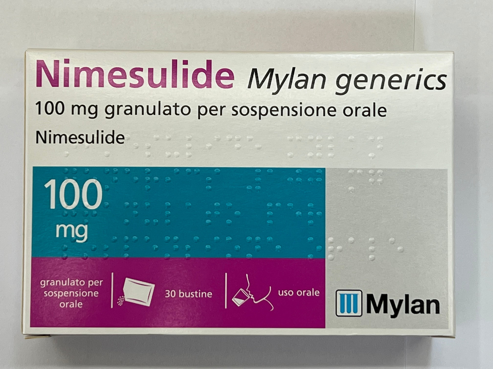

Контактная информация:
Цена: 350 грн/уп.
В наличии
Производитель: Италия
Цена: 350 грн/уп.
В наличии
Именно в FarmItal вы можете купить порошок Nimesil,Нимесил,НИмесулид в Украине, Гарантированно Качественный!
Доставка Nimesulide осуществляется транспортными компаниями, сроки выполнения заказа оговариваются менеджером Фармитал. Вы можете заказать Немесил в городах: Одесса, Херсон, Чернигов, Северодонецк, Бердянск, Бровары, Днепр, Винница, Киев, Славянск, Полтава, Краматорск, Белая Церковь, Каменское, Мариуполь, Черновцы, Александрия, Каменец- Подольский, Львов, Запорожье, Кропивницкий, Житомир, Ивано-Франковск, Сумы, Черкассы, Константиновка, Мелитополь, Кривой Рог, Ровно, Луцк, Никополь, Павлоград, Ужгород, Кременчуг, Лисичанск, Хмельницкий, Тернополь, Харьков, Николаев, а также других населенных пунктах Украины.
Оральные гранулы в форме порошка по 100мг № 30 - 350грн./уп.
1 пакетик содержит нимесулида 100мг;
вспомогательные вещества: лактоза, микрокристаллическая целлюлоза, натрия докузат, натрия бензоат, кремния диоксид коллоидный, крахмал кукурузный, магниястеарат;
Максимальная продолжительность курса лечения нимесулидом составляет 15 суток.
Взрослые: 1 пакет (100 мг нимесулида) 2 раза в сутки после еды.
Пациенты пожилого возраста: Пациенты пожилого возраста не нуждаются в снижении суточной дозы
Дети: Лекарственные средства, содержащие нимесулид, противопоказаны детям до 12 лет. Учитывая фармакокинетический профиль у взрослых и фармакодинамические характеристики нимесулида, коррекция дозы у детей 12–18 лет не требуется.
Способ применения: Содержимое пакета высыпать в стакан с негазированной водой. Перемешать ложкой до получения взвеси с апельсиновым запахом. Выпить суспензию сразу после перемешивания.
Нимесулид противопоказан больным с повышенной чувствительностью к действующему веществу - Нимесулид.
Хранить в недоступном для детей месте при комнатной температуре от 15 до 25°С.